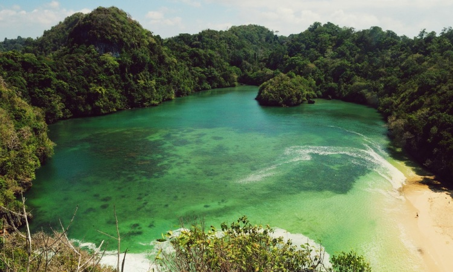
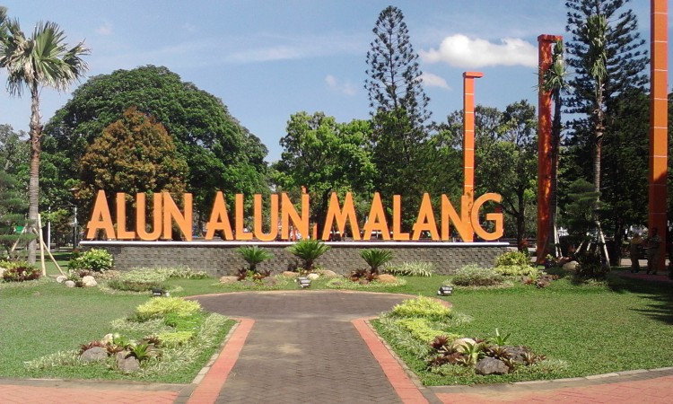
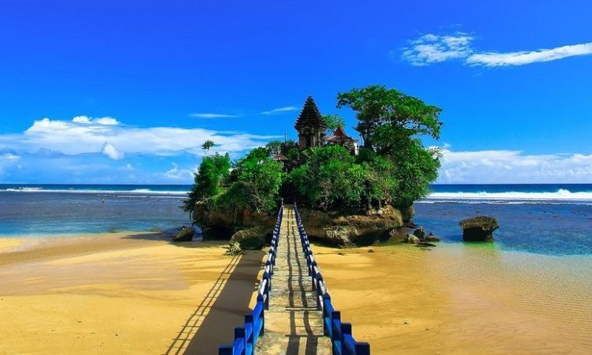
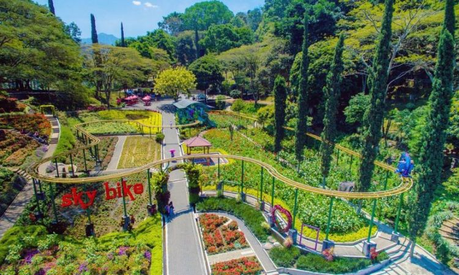
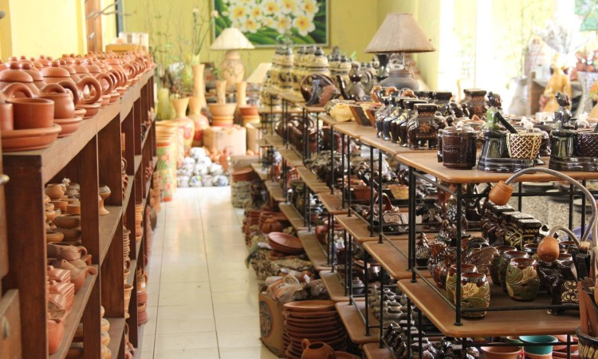

1. Pulau Sempu

Tempat wisata yang pertama adalah Pulau Sempu, yang sangat terkenal sebagai surga wisata alam di Kota Malang. Bagi para wisatawan, hukumnya wajib untuk mengunjungi pulau ini. Meski indah, tempat ini memiliki medan yang cukup sulit untuk orang awam. Jika Anda berniat mengunjunginya, sebaiknya Anda menyewa jasa travelling agar lebih terjamin dan mengetahui spot-spot yang bagus.
Banyak spot yang bisa Anda kunjungi di pulau ini, seperti Segara Anakan. Anda dapat menjadikannya spot cantik untuk berfoto karena memang pemandangannya sangat indah dan asri. Pemandangan pantai dengan tebing di tepinya membuatnya semakin istimewa. Anda pun bisa bermalam di pantai tersebut dengan tenda sambil menikmati indahnya pantai pada malam hari.
Lokasi: Desa Tambakrejo, Kec. Sumbermanjing Wetan, Kab. Malang, Jawa Timur.
2. Alun-Alun Kota Malang

Tempat wisata yang wajib Anda kunjungi saat berkunjung ke Kota Malang adalah Alun-alun Kota Malang. Tempat ini berada di pusat kota, yang tentunya memiliki akses yang mudah. Terdapat beberapa tempat makan yang ada disekitarnya sehingga memudahkan Anda untuk mengisi perut ketika Anda merasa lapar.
Tak hanya tempat makan, terdapat juga banyak tempat belanja yang berjejer di dekat alun-alun. Terdapat juga Masjid untuk beribadah dan juga Toko buku Gramedia.
Lokasi: Jl. Merdeka Selatan, Kiduldalem, Kec. Klojen, Malang, Jawa Timur.
3. Pantai Balekambang

Tempat wisata berikutnya adalah Pantai Balekambang yang terletak di selatan Kota Malang. Berjarak 65 km dari pusat kota, pantai ini selalu ramai didatangi oleh wisatawan. Pasalnya, tempat ini mempunyai bentuk seperti Tanah Lot di Kota Bali. Tentu saja keindahan pantainya tak perlu diragukan lagi.
Tempat ini mempunyai ombak yang indah dengan suaranya yang sangat menenangkan. Anda dapat menikmati omba di sepanjang bibir pantai yang terbentang sepanjang 2 km tersebut.
Lokasi: Dusun Sumber Jambe, Desa Srigonco, Kec. Bantur, Kab. Malang, Jawa Timur.
4. Selecta

Destinasi wisata berikutnya adalah Selecta yang merupakan taman bunga yang sangat indah. Tak hanya taman bunga saja, pemandangan sepanjang jalan menuju Selecta pun sangat menawan. Tempat ini benar-benar cocok untuk Anda yang sedang ingin mengusir penat di kepala Anda. Karena Anda akan disuguhkan pemandangan khas Malang yang berpadu dengan udara yang sangat fresh.
Tak hanya pemandangan saja, terdapat pula wahana yang disediakan untuk pengujung. Seperti berkendara dengan kuda, sepeda angin, kolam renang, dan lain sebagainya. Hanya dikenakan biaya masuk yang lumayan murah Anda sudah dapat menikmati indahnya Selecta.
Lokasi: Jl. Raya Selecta No. 1, Tulungrejo, Bumiaji, Kota Batu, Jawa Timur.
5. Sentra Kerajinan Keramik Dinoyo

Destinasi wisata yang bisa Anda kunjungi selanjutnya adalah Sentra Kerajinan Keramik Dinoyo. Tempat ini dapat Anda jadikan destinasi terakhir saat Anda berlibur di Kota Malang. Anda dapat berbelanja berbagai kerajinan keramik khas Malang yang bisa dijadikan buah tangan. Soal kualitas, Anda tak perlu ragu lagi karena kerajinan yang terdapat disini sudah sangat terkenal.
Terletak di Jl MT Haryono XI, Anda dapat berbelanja oleh-oleh dengan puas. Pasalnya, terdapat berbagai macam kerajinan keramikseperti vas bunga, mug, hiasan rumah, dan lain sebagainya.
Lokasi: Jl. MT. Haryono XIII No. 450, Dinoyo, Kec. Lowokwaru, Malang, Jawa Timur.